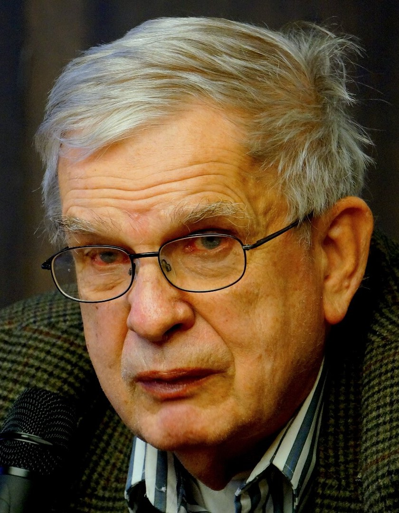

Tomas Venclova
 Tomas Venclova – vienas žymiausių XX a. antrosios pusės lietuvių poetų, eseistų ir literatūros kritikų. Gimė 1937 m. Klaipėdoje. Per karą tėvui pasitraukus į Rusiją, augo pas senelį, klasikinės filologijos profesorių Merkelį Račkauską. Nuo 1947 m. mokėsi Vilniaus 1-oje berniukų gimnazijoje. Šeštajame dešimtmetyje Vilniaus universitete studijavo antikines kalbas ir lituanistiką, vėliau ilgesnį laiką gyveno ir mokėsi Maskvoje, Peterburge, Tartu. Iš pradžių Venclova laikėsi literatūrinio gyvenimo nuošalėje, šeštajame ir septintajame dešimtmetyje dirbo daugiausia kaip vertėjas, į lietuvių kalbą išvertė nemažai Vakarų ir Rusijos lyrikų bei dramaturgų, tokių kaip Viljamas Šekspyras, Tomas Sternsas Eliotas, Sent-Džonas Persas, Alfredas Žari, Borisas Pasternakas, kiek vėliau Česlovas Milošas, Josifas Brodskis, kūrinių. Aštuntajame dešimtmetyje Venclova pradėjo atvirai konfrontuoti su valdžia. 1975-aisiais jis parašė atvirą laišką Lietuvos komunistų partijos Centro komitetui, kuriame pareiškė norą emigruoti ir išdėstė savo apsisprendimo priežastis. 1976-aisiais jis tapo vienu iš žmogaus teises ginančios Helsinkio grupės įkūrėjų. 1977-aisiais valdžia galų gale leido Venclovai išvykti iš Sovietų Sąjungos. Poetas apsistojo JAV, kur dėstė įvairiose aukštosiose mokyklose. Paskelbus Nepriklausomybę Venclovos kūryba pripažinimo susilaukė ne tik Lietuvoje, kur 2000-aisiais jam paskirta Nacionalinė premija, bet ir visame pasaulyje – jo poezijos ir eseistikos vertimų knygos išėjo pagrindinėmis Rytų ir Vakarų Europos kalbomis, be to, albanų, kinų, esperanto kalbomis. Nuo 2012 m. T. Venclova yra Jeilio (Yale) universiteto emeritas. 2019 m. Tomas Venclova grįžo į Vilnių, kur gyvena iki šios dienos.
Kūryba
„Raketos, planetos ir mes“ ir „Golemas, arba dirbtinis žmogus“ – pirmieji Tomo Venclovos parašyti kūriniai. Po maždaug dešimties metų išleido eilėraščių rinkinį „Kalbos ženklas: eilėraščiai“. Vėliau išleido „98 eilėraščiai“, „Lietuva pasaulyje“, „Tekstai apie tekstus“, „Tankėjanti šviesa: eilėraščiai“, „Vilties formos: eseistika ir publicistika“, „Pašnekesys žiemą: eilėraščiai ir vertimai“, „Reginys iš alėjos: eilėraščiai“, „Vilnius: vadovas po miestą“, „Vienkartinė šalis: eilėraščiai“, „Seinų eilėraščiai“, „Vilnius: asmeninė istorija“, „Lietuvos istorija visiems, I-II tomas“ ir kt. Vos prieš metus išleido „ Už Onos ir Bernardinų: eilėraščiai“. Tomo Venclovos kūrybos galima pasiklausyti LRT mediatekoje, „Vidurnakčio lyrikoje“. Režisierius Saimir Bajo 2022 metais sukūrė dokumentinį filmą apie Tomą Venclovą pavadinimu „Dekadentas Nr. 2419“.
Galerija